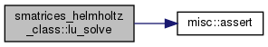

3D-HelmholtzのS行列を複数用いて，multiple scatteringを解くための構造体 [詳解]
データ型 | |
| type | smatrices_helmholtz |
| 3D-HelmholtzのS行列を複数用いて，multiple scatteringを解くための構造体 [詳解] | |
関数/サブルーチン | |
| subroutine | init (self, nobj, smats) |
| 初期化 [詳解] | |
| subroutine | gen_amat (self) |
| 単位行列，S行列，translation matrixを並べた係数行列amatを作る [詳解] | |
| subroutine | lu_decompose (self) |
| 係数行列amatをLU分解する [詳解] | |
| subroutine | lu_solve (self) |
| LU分解した係数行列amatとbvecを用いて連立方程式を解く．bvecに解が上書きされる． [詳解] | |
| subroutine | gen_bvec_planewave (self, amp, pvec) |
平面波  が入射波するときの右辺ベクトルを生成 [詳解] が入射波するときの右辺ベクトルを生成 [詳解] | |
| subroutine | gen_solution (self, sol) |
| 現在のbvecから境界・内点の解を計算 [詳解] | |
詳解
3D-HelmholtzのS行列を複数用いて，multiple scatteringを解くための構造体
関数/サブルーチン詳解
◆ gen_amat()
|
private |
単位行列，S行列，translation matrixを並べた係数行列amatを作る
- 引数
-
self
smatrices_helmholtz_class.f90 の 97 行目に定義があります。
参照先 math::one, math::zero.
3D-HelmholtzのS行列を複数用いて，multiple scatteringを解くための構造体
Definition: smatrices_helmholtz_class.f90:12
◆ gen_bvec_planewave()
|
private |
平面波 が入射波するときの右辺ベクトルを生成
- 引数
-
self amp 複素振幅 pvec 伝播方向を表すベクトル 
smatrices_helmholtz_class.f90 の 165 行目に定義があります。
参照先 math::ione, math::loct(), math::sph().
3D-HelmholtzのS行列を複数用いて，multiple scatteringを解くための構造体
Definition: smatrices_helmholtz_class.f90:12
呼び出し関係図:
◆ gen_solution()
|
private |
現在のbvecから境界・内点の解を計算
- 引数
-
self sol 解
smatrices_helmholtz_class.f90 の 199 行目に定義があります。
参照先 math::loct(), math::zero.
236 sols(k)%u_bndry(:,:) = sols(k)%u_bndry(:,:) + a(loct(n,m))*self%smats(k)%sols(loct(n,m))%u_bndry(:,:)
3D-HelmholtzのS行列を複数用いて，multiple scatteringを解くための構造体
Definition: smatrices_helmholtz_class.f90:12
呼び出し関係図:
◆ init()
| subroutine smatrices_helmholtz_class::init | ( | class(smatrices_helmholtz), intent(out) | self, |
| integer, intent(in) | nobj, | ||
| type(smatrix_helmholtz), dimension(nobj), intent(in) | smats | ||
| ) |
初期化
- 引数
-
self nobj 散乱体の数 smats それぞれの散乱体のS行列
smatrices_helmholtz_class.f90 の 64 行目に定義があります。
参照先 misc::assert().
3D-HelmholtzのS行列を複数用いて，multiple scatteringを解くための構造体
Definition: smatrices_helmholtz_class.f90:12
3D-HelmholtzのS行列
Definition: smatrix_helmholtz_class.f90:14
呼び出し関係図:

◆ lu_decompose()
|
private |
係数行列amatをLU分解する
- 引数
-
self
smatrices_helmholtz_class.f90 の 134 行目に定義があります。
参照先 misc::assert().
3D-HelmholtzのS行列を複数用いて，multiple scatteringを解くための構造体
Definition: smatrices_helmholtz_class.f90:12
呼び出し関係図:
◆ lu_solve()
|
private |
LU分解した係数行列amatとbvecを用いて連立方程式を解く．bvecに解が上書きされる．
- 引数
-
self
smatrices_helmholtz_class.f90 の 150 行目に定義があります。
参照先 misc::assert().
156 call zgetrs('N', self%size_all, 1, self%amat, self%size_all, self%ipivot, self%bvec, self%size_all, info)
3D-HelmholtzのS行列を複数用いて，multiple scatteringを解くための構造体
Definition: smatrices_helmholtz_class.f90:12
呼び出し関係図:
